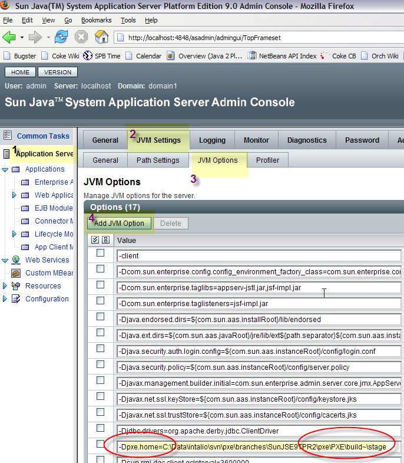
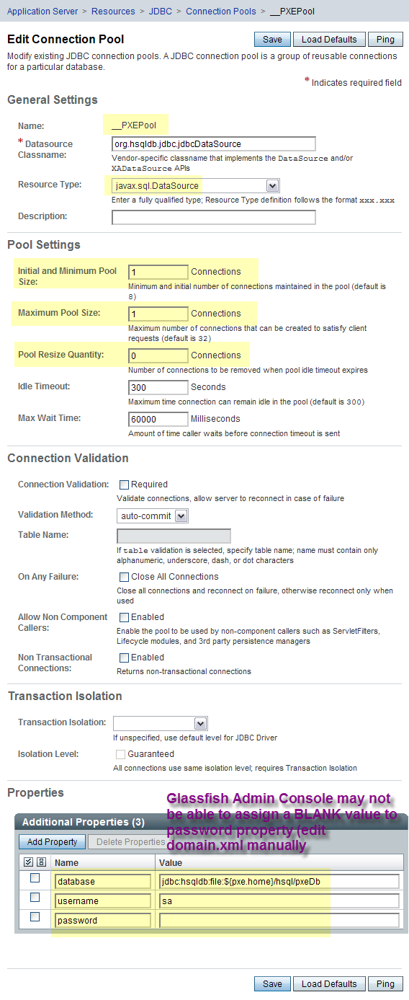
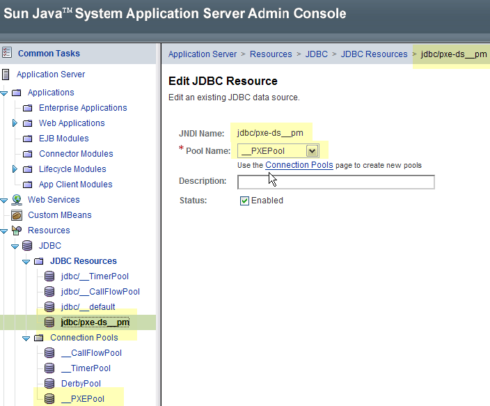

|
Date |
Author |
Description |
|---|---|---|
|
Janurary 28, 2006 |
Matt Stevens (Sun Microsystems) |
Initial Version |
|
Janurary 29, 2006 |
Matt Stevens (Sun Microsystems) |
HSQL Datasource configuration revised |
|
Janurary 30, 2006 |
Matt Stevens (Sun Microsystems) |
HSQL Datasource configuration revised |
| This provisional document describes how to host ODE Kernel in Sun Java System Application Server 9.0 Platform Edition (BETA February 2006). Sun AS9.0 PE is Sun's productization of the Java.net project Glassfish (http://glassfish.dev.java.net). |
| While there are many solutions (including Glassfish's Custom MBean feature for deploying MBeans), the architecture presented here is focused on leveraging the Lifecycle Module solution in Glassfish to play the same role that the fivesight.bootstrap.BootLoader and org.apache.ode.server.Main; that is, play the role of (implementing) the OdeKernel.RuntimeContext. |
| 1 | Download, install and configure Glassfish. Procedure tested on Build 32d 26-Jan-06, |
| 2 | In order to compile the sun-as9-lcm.jar in the ODE build you need to
COPY appserv-rt.jar (approx. a 15MB file) from the lib directory
of the Sun Application Server installation to the ./ode/buildlib/sun-as9-beta
directory. |
./ode/build/build.properties include default properties
for JMX and RMI and HTTP ports and JMX credentials. Set these values as
you like. These values will be used to replace tokens in many files within
./etc and ./examples and the default init parameters
in the ODE WAR. |
JmxCommand and the related CLI and ANT interfaces have been updated to support JMXConnector.CREDENTIALS |
org.apache.ode.integrations.as9.OdeSunAS9LifecycleListener
is the implementation of the Sun AS LifecycleListener and is found in
the i-as9 module |
sun-as9-lcm.jar isolates OdeSunAS9LifecycleListener in
its own JAR, distributed in ./ode-lib (much in the same way
the kernel-boot.jar is created) |
| The building of the Sun AS9 modules is dependent on the pressence of the appserv-rt.jar under buildlib |
The standard J2EE WAR file is assembled and placed under ./etc/web/ode.war
|
| The procedure below covers the installation of the ODE Lifecycle Module to a target Glassfish domain, configuration of datasource used for the ODE backing store (optionally useMemory DAO backing store) and deployment of the ODE WAR |
| The procedure can be performed using the Web based Admin Console; alternatively the ASADMIN CLI or ASADMIN Ant tasks can be used too. |
Add the following JVM option to the AS.
-Dode.home={ode installation directory}
Note: if working from a ODE Build environment you can assign ode.home to the location of the stage directory in your build environment. This works very nicely for quickly testing your changes in AS after building.

append to {target-domain-dir}/config/server.policy
// Intalio ODE classes get all permissions (todo: need to find minimal permissions)
grant codeBase "file:${ode.home}/ode-lib/-" {
permission java.security.AllPermission;
};
grant codeBase "file:${ode.home}/lib/-" {
permission java.security.AllPermission;
};
Copy the clean HSQL database files from ${ode.home}/hsql/*.* to a separate location so that installed files stay fresh.
Note: when ${ode.home} points the ODE dev environment stage directory, rebuilding the state will refresh the HSQL DB files automatically.
As a prerequisite to creating the HSQL Datasource, append to the AS Domain's
JVM classpath suffix {ode installation directory}/lib/hsqldb-1.8.0.1.jar
Create a new JDBC Connection Pool in the AS Domain for HSQL with the following parameters (note that HSQL does not support transaction isolation so the pool size must be one (1) connection maximum) (note: double underscores in pool name):

Create a new JDBC Resource (binding in JNDI) to the pool created previously with the following parameters (note: double underscores name):
connectionpoolid=__ODEPool
name=jdbc/ode-ds__pm

Create Lifecycle Module with the following parameters:
class-name=org.apache.ode.integrations.as9.OdeSunAS9LifecycleListener
classpath=${ode.home}/ode-lib/sun-as9-lcm.jar;${ode.home}/etc;${ode.home}/ode-lib/utils.jar;${ode.home}/ode-lib/odetools.jar;${ode.home}/ode-lib/kernel-boot.jar;${ode.home}/lib/commons-collections-3.1.jar;${ode.home}/lib/commons-lang-2.1.jar;${ode.home}/lib/commons-logging-1.0.5.jar;${ode.home}/lib/commons-logging-optional-1.0.5.jar;${ode.home}/lib/commons-pool-1.2.jar;${ode.home}/lib/spice-metaclass-1.0.jar
enabled=true
is-failure-fatal=false
load-order=999999
name=OdeKernelLifecycleModule
description: Lifecycle Module Hosting Ode Kernel
property: ode.config.file=${ode.home}/etc/sun/as9/ode-config-aslcm.xml
(atlernatively use MemDAO) ${ode.home}/etc/sun/as9/ode-config-memdao-aslcm.xml

Note: Various default values in ODE implementation are possible through system
properties. See ${ode.home}/etc/ode.properties for examples of
these properties. A quick way to establish these ODE specific system properties
(other than adding them to the JVM configuration of the domain.xml) is to specify
the following optional property in the Lifecycle Module configuration. It is
possible for values hardcoded in the Ode Kernel configuration XML files to defer
to system properties if they exist. This is just another way to drive the Ode
Kernel configuration.
optional property: ode.sys.properties.file=${ode.home}/etc/ode.properties
Deploy ODE WAR file to AS domain. The ODE WAR is found at ./etc/web/ode.war
Note: the WAR is pre-built and currently hardcoded on the RMI registry URL to the values found in ./ode/build/build.properties. You will need to fix the web.xml in the WAR if you want a different RMI URL.